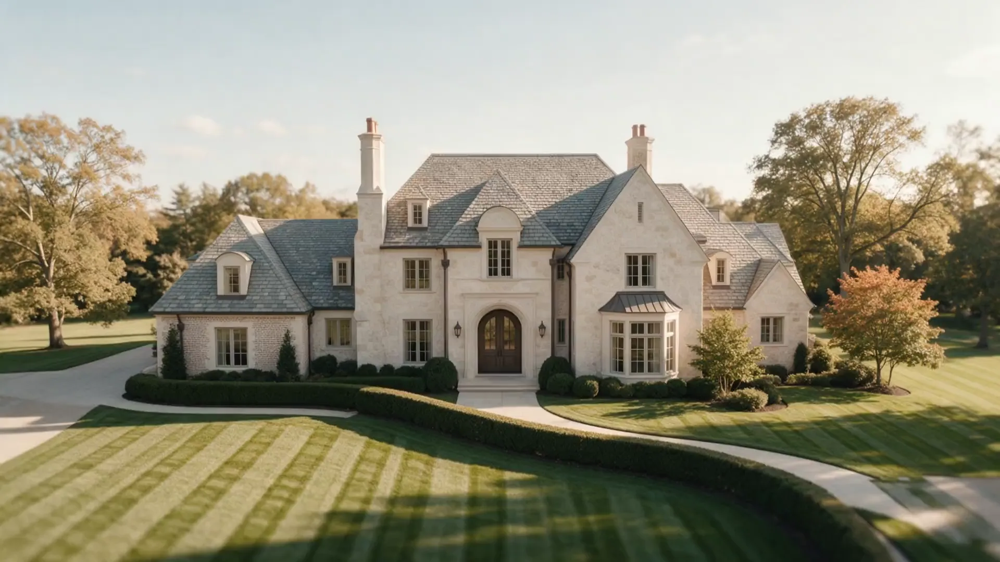
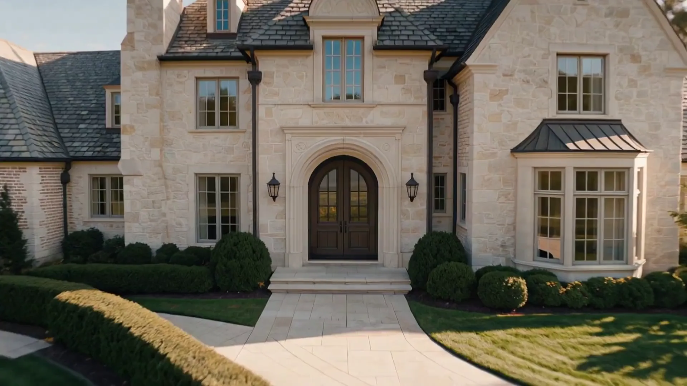

Let's sell your home the right way.
Follow one home from the air to the front door and through every room, then build the plan for yours.
First, we get it ready.
Your Home Prep Advisor walks the home with you, tells you what is worth doing, and lines up the vendors.
Build my plan